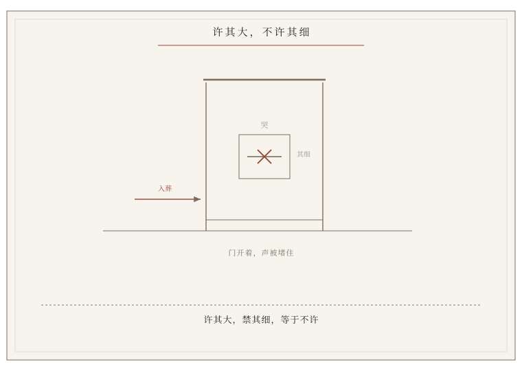

檀弓上 · 三·三 · 第 206 课
季武子成寝，杜氏之葬在西阶之下，请合葬焉；许之，入宫而不敢哭。武子曰「合葬，非古也」，又曰「吾许其大而不许其细，何居」，遂命之哭。注「自见夷人冢墓以为寝，欲文过」「记此者，善其不夺人之恩」。
说什么事：墓上造了寝，人来了却不许哭。
落在哪一层：礼，兼及礼意。论「许」之实与「名」之饰。
为何编在此位：上节立三伦之制，此节以一个旧案见礼在权势前的退让与最后一转。
【经】季武子成寢。杜氏之葬在西階之下，請合葬焉，許之。入宮而不敢哭。武子曰：「合葬，非古也。自周公以來，未之有改也。吾許其大而不許其細，何居？」命之哭。
【注】武子，魯公子季友之曾孫季孫夙。自見夷人冢墓以為寢，欲文過。「合葬非古」，自見夷人冢墓以為寢，欲文過。記此者，善其不奪人之恩。
【疏】此一节明不夺人之恩，兼论夷人冢墓为寝、欲文过之事。注「武子至孙夙」：案《世本》，公子友生齐仲，齐仲生无逸，无逸生行父，行父生夙，夙是公子友曾孙也。注「自见至文过」：言「文过」者，武子自云，合葬之礼非古昔之法，从周公以来始有合葬，至今未改；我成寝之时，谓此冢墓是周公以前之事，不须合葬，故我夷平之以为寝，不肯服理，是文饰其过。先儒皆以杜氏丧从外来，就武子之寝合葬，与孔子合葬于防同；又案《晏子春秋》景公成路寝之台，逢于阿、盆成逆后丧，并得附葬景公寝中，与此同也。「吾许其大」者，听之将丧而入葬，是许其大；「不许其细」，哭是细也；「何居」，居，语辞，既许其大而不许其细，是何道理。
成寝 造成寝舍。寝为居处之所，非庙。
夷 平也。铲平。
西阶之下 堂西阶下之地。杜氏之葬在此，则寝实建于冢上。
合葬 与先死者同穴。注「自周公以来，未之有改」，是武子自文之辞。
大 细 大谓入葬，细谓哭。
何居 居为语辞，即「何故」。
季武子造寝，杜氏的墓正在西阶之下，杜家请合葬于此，武子许了。杜家人进了寝宫却不敢哭。武子说：「合葬本非古礼，自周公以来没有改过。我许了大的，不许小的，是何道理？」便命他们哭。
此节四层转折：成寝（占冢）、请合葬（许）、入而不哭（细未许）、命之哭（细亦许）。郑注一句「自见夷人冢墓以为寝，欲文过」，把武子的第一层动机点破：他造寝时以为这是周公以前的旧冢，本不必合葬，故夷平之。及人来了，他先许其大——许得极爽快；又不许其细——拦得极干脆。末了一转，命之哭：郑云「善其不夺人之恩」。所善者只此一转，不是全部。
第一层 礼之失常在「先做后说」 寝已成了，冢已夷了，事后来者只能请求。此节之失不在不许，而在先造。凡涉及他人之坟、之宅、之权利，先动而后议，纵有辞可文，帐已难清。
第二层 文过之辞最像古礼 武子说「合葬非古也，自周公以来未之有改也」。这句话单独听，是极有学问的考礼之言。郑注却断为「欲文过」。可见考据可以是学问，也可以是挡箭牌；分辨之法，是看他因这句话得到什么。
第三层 许大不许细 许其入葬，不许其哭。形式全给，实情全抽。疏解「大」为入葬、「细」为哭——哭看似小事，恰是这场合葬的全部意义所在。给了位置，不给声音，等于没给。
第四层 一转之善 郑注「善其不夺人之恩」。这一转，把前述所有文过都抵了一半：人毕竟还是让哭了。礼之记录，往往如此——不全许其人，亦不全没其善。
与今日何干 补偿、道歉、追认，最易犯的错就是「许其大而不许其细」：把形式给足，把该给的那一点实感扣住。此节可作验收标准：受者能不能当着你的面，把该有的那声哭出来。
| 左 | 右 |
|---|---|
| 季武子成寝 | 夷人冢墓以为寝 |
| 杜氏请合葬，许之 | 许其大 |
| 入宫而不敢哭 | 不许其细 |
| 合葬非古也 | 欲文过之辞 |
| 吾许大不许细，何居 | 既许其实，何必禁其声 |
| 命之哭 | 善其不夺人之恩 |
画一座新成的堂室之内，西阶之侧。画面右侧是堂的西阶（三级石阶，阶面干净），阶下与堂基相接处露出一小片被人为铲平的土色地面（色略深，与周围新土不同），其上无碑无木。左侧一位年长主人立于阶东，衣袖宽大，一手向阶下方向伸出作「命」之状。阶下偏内处立着两三位素服来人，为首者低头、双手掩于袖中，身后一人已抬袖掩面——示「入宫而不敢哭」将哭未哭之际。堂上无陈设，只余一片空阔。不写文字。赭色只用在被铲平的那一小片土色与主人伸出的那只手上。
